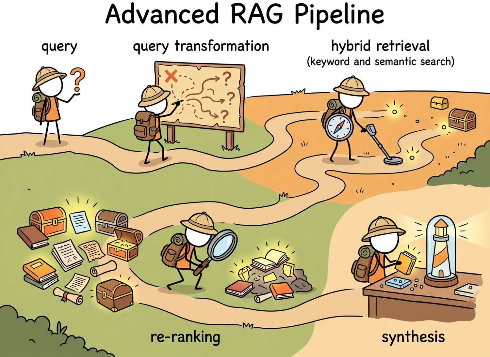
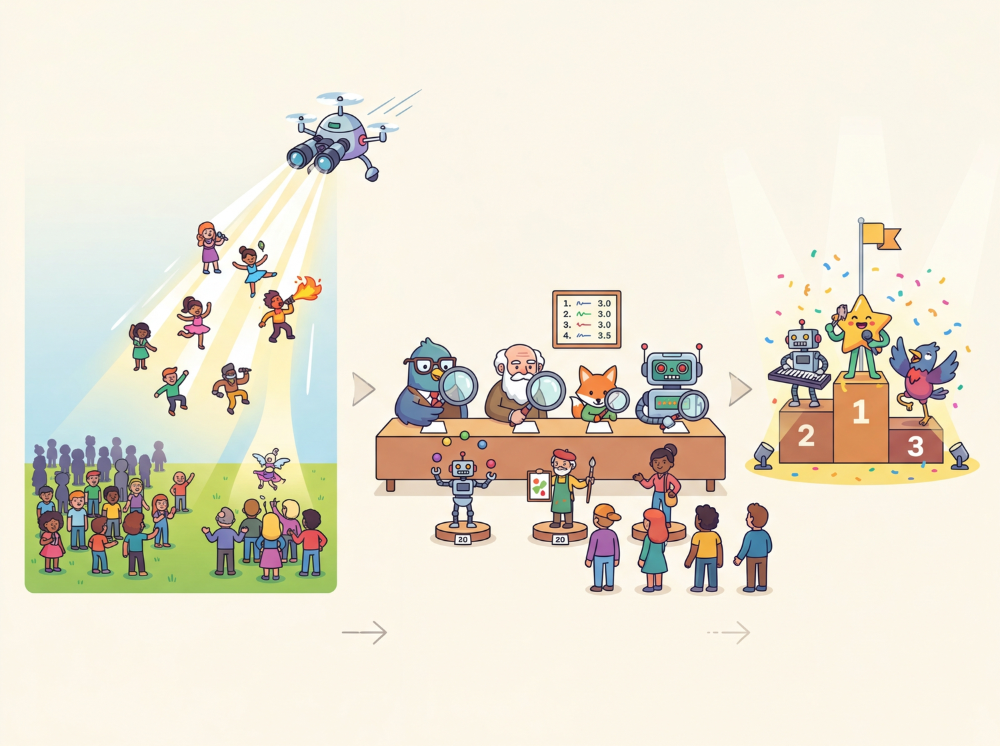
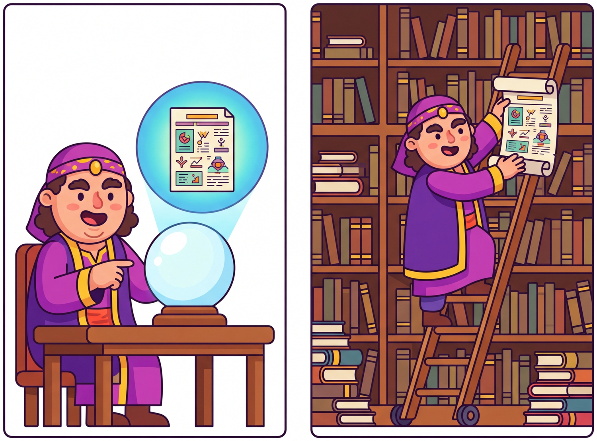
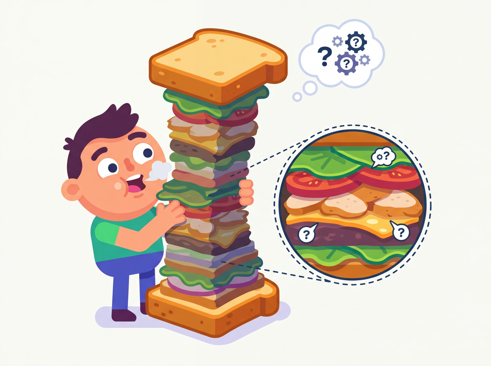

It is not enough to find the right answer. You must first learn to ask the right question.
RAG, Inquisitive AI Agent
Naive RAG fails when the query and the relevant documents use different words, when top-k retrieval misses the best result, or when the model generates claims not supported by context. Advanced RAG techniques attack each of these failure modes: query transformation rewrites the query to improve retrieval, hybrid search combines dense and sparse signals, re-ranking uses powerful cross-encoders to refine initial results, and self-corrective approaches like CRAG and Self-RAG let the system verify and improve its own outputs. Building on the basic RAG architecture from Section 18.1, mastering these techniques is the difference between a demo and a production system.
Prerequisites
This section extends the basic RAG architecture from Section 18.1 with advanced retrieval techniques. You should understand embedding similarity search from Section 17.1 and document chunking strategies from Section 17.4. The reranking models discussed here build on the cross-encoder concepts that complement the bi-encoder approach covered in the embedding chapter.

# implement multi_query_retrieve
def multi_query_retrieve(query, collection, k=5, num_variants=3):
"""Generate multiple query variants and merge results."""
# Generate query variants
response = client.chat.completions.create(
model="gpt-4o-mini",
messages=[{
"role": "system",
"content": f"Generate {num_variants} alternative phrasings of "
"the following search query. Return one per line."
}, {
"role": "user",
"content": query
}]
)
variants = response.choices[0].message.content.strip().split("\n")
all_queries = [query] + variants
# Retrieve for each variant
seen_ids = set()
merged_results = []
for q in all_queries:
results = collection.query(query_texts=[q], n_results=k)
for doc, meta, doc_id in zip(
results["documents"][0],
results["metadatas"][0],
results["ids"][0]
):
if doc_id not in seen_ids:
seen_ids.add(doc_id)
merged_results.append({
"document": doc,
"metadata": meta
})
return merged_results[:k * 2] # Return expanded setMulti-query expansion is the single easiest advanced technique to implement and typically boosts recall by 10 to 20%. If you only have time for one improvement to your naive RAG pipeline, start here. It costs one extra LLM call (use a cheap, fast model) and requires no changes to your index or embeddings.
18.2.1.3 Step-Back Prompting
Step-back prompting (Zheng et al., 2023) generates a more abstract or general version of the query before retrieval. For example, the query "What was the GDP growth rate of Japan in Q3 2024?" might be stepped back to "What are the recent economic trends in Japan?" The broader query retrieves documents that provide necessary background context, which is then combined with results from the specific query. compares these three query transformation strategies.
18.2.2 Hybrid Retrieval: Dense + Sparse
What it is: A fast generator model produces a candidate answer; a slower or more grounded verifier model (or rule, or human) signs off before the user sees it. Inserts a quality gate without paying full inference cost on every token.
When not to use it: Real-time latency budgets under ~500 ms end-to-end. The verifier round-trip is the cost; if you can't afford one extra call, fall back to a generator with strong prompting.
Catalogue: See the full discussion + variants in FM.0c Pattern P1.
Dense retrieval (embedding similarity) excels at semantic matching but can miss exact keyword matches. Sparse retrieval (BM25) excels at keyword matching but misses semantic relationships. Hybrid retrieval combines both signals, typically using Reciprocal Rank Fusion (RRF) to merge the ranked result lists.
18.2.2.1 BM25 for Sparse Retrieval
BM25 is a term-frequency scoring function that has been the backbone of search engines for decades. It assigns higher scores to documents containing query terms that are rare in the corpus (high IDF, or Inverse Document Frequency) and that appear frequently in the specific document (high TF, or Term Frequency), with saturation to prevent long documents from dominating.
from rank_bm25 import BM25Okapi
import numpy as np
class HybridRetriever:
"""Combine dense (vector) and sparse (BM25) retrieval."""
def __init__(self, documents, collection):
self.documents = documents
self.collection = collection # ChromaDB collection
# Build BM25 index
tokenized = [doc.lower().split() for doc in documents]
self.bm25 = BM25Okapi(tokenized)
def retrieve(self, query, k=5, alpha=0.5):
"""Hybrid retrieval with Reciprocal Rank Fusion.
Args:
alpha: Weight for dense results (1-alpha for sparse).
"""
# Dense retrieval
dense_results = self.collection.query(
query_texts=[query], n_results=k * 2
)
dense_ids = dense_results["ids"][0]
# Sparse retrieval (BM25)
tokenized_query = query.lower().split()
bm25_scores = self.bm25.get_scores(tokenized_query)
sparse_top = np.argsort(bm25_scores)[::-1][:k * 2]
# Reciprocal Rank Fusion
rrf_scores = {}
rrf_k = 60 # Standard RRF constant
for rank, doc_id in enumerate(dense_ids):
rrf_scores[doc_id] = rrf_scores.get(doc_id, 0)
rrf_scores[doc_id] += alpha / (rrf_k + rank + 1)
for rank, idx in enumerate(sparse_top):
doc_id = f"doc_{idx}"
rrf_scores[doc_id] = rrf_scores.get(doc_id, 0)
rrf_scores[doc_id] += (1 - alpha) / (rrf_k + rank + 1)
# Sort by fused score
ranked = sorted(
rrf_scores.items(),
key=lambda x: x[1],
reverse=True
)
return ranked[:k]The HybridRetriever above is simplified for clarity. In a production implementation, you would need to map BM25 array indices to the same document ID namespace used by the vector store, so that RRF can correctly merge results from both systems. Libraries like LangChain and LlamaIndex handle this mapping automatically in their hybrid retriever implementations.
Hybrid retrieval consistently outperforms either dense or sparse retrieval alone across benchmarks. In the BEIR benchmark, combining BM25 with a dense retriever using RRF improved NDCG@10 (Normalized Discounted Cumulative Gain at rank 10, a standard retrieval quality metric) by 5 to 15% compared to using either method alone. The gains are largest on technical domains where exact terminology matters (legal, medical, code) but dense semantic understanding is also needed.
18.2.3 Re-Ranking with Cross-Encoders

18.2.1 Query Transformation
The user's raw query is often a poor match for the retrieval index. Queries may be vague, use different terminology than the source documents (a challenge rooted in text representation), or bundle multiple sub-questions into one. Query transformation techniques rewrite, expand, or decompose the original query to improve retrieval recall and precision.
18.2.1.1 HyDE: Hypothetical Document Embeddings
HyDE (Gao et al., 2022) takes a counterintuitive approach: instead of embedding the query directly, it first asks the LLM to generate a hypothetical answer to the query (a creative application of prompt engineering), then embeds that hypothetical answer and uses it for retrieval. The intuition is that a hypothetical answer, even if factually incorrect, will be more lexically and semantically similar to real documents that contain the actual answer than the short query itself.

HyDE essentially asks the model to hallucinate on purpose, then uses that hallucination to find real documents. It is one of the few techniques in AI where being confidently wrong is a feature, not a bug.
# implement hyde_retrieve
from openai import OpenAI
client = OpenAI()
def hyde_retrieve(query, collection, k=5):
"""HyDE: Generate hypothetical answer, embed it, retrieve."""
# Step 1: Generate a hypothetical document
hypo_response = client.chat.completions.create(
model="gpt-4o-mini",
messages=[{
"role": "system",
"content": "Write a short passage that would answer the "
"following question. Be specific and detailed."
}, {
"role": "user",
"content": query
}],
temperature=0.7
)
hypothetical_doc = hypo_response.choices[0].message.content
# Step 2: Retrieve using the hypothetical document
results = collection.query(
query_texts=[hypothetical_doc],
n_results=k
)
return results["documents"][0], results["metadatas"][0]18.2.1.2 Multi-Query Expansion
Multi-query expansion generates several rephrased versions of the original query, retrieves results for each variant, and merges the result sets. This approach captures different phrasings and perspectives that might match different documents in the corpus.

Initial retrieval (whether dense, sparse, or hybrid) uses fast but approximate scoring. Re-ranking applies a more powerful but slower model to the initial candidate set. Cross-encoder models are particularly effective because they jointly encode the query and document together, enabling fine-grained interaction between query and passage tokens.
18.2.3.1 How Cross-Encoders Differ from Bi-Encoders
Bi-encoders (used for initial retrieval) encode the query and document independently, then compute similarity via dot product or cosine. This allows pre-computing document embeddings but limits interaction between query and document representations. Cross-encoders encode the query and document as a single concatenated input, enabling full token-level attention between them. This produces much more accurate relevance scores but requires running inference for every (query, document) pair, making it too slow for searching millions of documents. Figure 18.2.6 shows the architectural difference between bi-encoders and cross-encoders in a retrieval pipeline.
18.2.3.2 Using Cohere Rerank
This snippet reranks an initial set of retrieved passages using the Cohere Rerank API.
# implement rerank_results
import cohere
co = cohere.ClientV2("YOUR_API_KEY")
def rerank_results(query, documents, top_n=5):
"""Re-rank retrieved documents using Cohere Rerank."""
response = co.rerank(
model="rerank-v3.5",
query=query,
documents=documents,
top_n=top_n,
return_documents=True
)
reranked = []
for result in response.results:
reranked.append({
"text": result.document.text,
"relevance_score": result.relevance_score,
"original_index": result.index
})
return rerankedIt is tempting to stack every technique in this section (HyDE + multi-query + reranking + contextual retrieval) into a single pipeline and assume the combination will outperform any subset. In practice, each stage adds latency and cost, and some techniques can interfere with each other. HyDE works best when the embedding model is weaker; if you already use a strong embedding model with instruction-tuned query prefixes, HyDE may add hallucinated noise. Cross-encoder reranking helps most when the initial retrieval pool is large and noisy; on a small, curated corpus it may add latency for negligible gain. Always benchmark each technique in isolation and in combination on your actual data before committing to a complex pipeline.
18.2.4 Contextual Retrieval
Standard chunking strips away the surrounding context that gives a chunk its meaning. A chunk reading "The company reported 15% growth" is ambiguous without knowing which company, which metric, and which time period. Contextual retrieval (Anthropic, 2024) prepends each chunk with a short contextual summary generated by an LLM, creating self-contained chunks that embed and retrieve much more accurately.
Anthropic's experiments showed that contextual retrieval reduced retrieval failure rates by 49% compared to standard chunking, and by 67% when combined with BM25 hybrid search. The contextual prefix is typically 50 to 100 tokens describing the document title, section heading, and the chunk's role within the broader document. This prefix is included when embedding but can be omitted when presenting the chunk to the LLM for generation.
18.2.5 Self-Corrective RAG
Standard RAG blindly trusts the retrieval results and generates from whatever context is provided. Self-corrective RAG systems evaluate the quality of retrieved documents and the faithfulness of generated answers, triggering corrective actions when problems are detected.
18.2.5.1 CRAG: Corrective Retrieval-Augmented Generation
CRAG (Yan et al., 2024) adds a retrieval evaluator that classifies each retrieved document as "correct," "incorrect," or "ambiguous." If all documents are incorrect, the system falls back to web search. If documents are ambiguous, the system refines the query and re-retrieves. Only when documents are classified as correct does generation proceed normally. Figure 18.2.7 illustrates how CRAG branches into correction paths based on retrieval quality.
18.2.5.2 Self-RAG
Self-RAG (Asai et al., 2023) trains the LLM itself to generate special reflection tokens that assess whether retrieval is needed, whether retrieved passages are relevant, whether the generated response is supported by the evidence, and whether the response is useful. These self-assessments allow the model to adaptively decide when to retrieve, which passages to use, and when to regenerate.
18.2.6 Fusion Retrieval and Multi-Modal RAG
Fusion retrieval goes beyond combining dense and sparse signals. RAG Fusion (Raudaschl, 2023) generates multiple search queries, retrieves results for each, and applies RRF across all result sets. This approach captures diverse perspectives on the query and is particularly effective for complex, multi-faceted questions.
18.2.6.1 Multi-Modal RAG
Multi-modal RAG extends retrieval beyond text to include images, tables, charts, and diagrams. This is essential for domains where critical information is encoded visually, such as scientific papers (figures and plots), financial reports (tables and charts), or technical documentation (architecture diagrams). Vision-language models like GPT-4o and Claude can process both retrieved text and images in their context window.
Multi-modal RAG introduces several unique challenges: (1) embedding images and text into a shared vector space is still an active research area, with models like CLIP providing only coarse alignment; (2) table extraction from PDFs is error-prone, often requiring specialized tools; (3) the token cost of including images in the context is high (a single image may consume 500+ tokens); and (4) evaluation is more complex because both visual and textual relevance must be assessed.
18.2.7 Comparison of Advanced RAG Techniques
| Technique | What It Fixes | Latency Cost | Best For |
|---|---|---|---|
| HyDE | Query-document vocabulary gap | +1 LLM call | Technical/domain queries |
| Multi-Query | Single-perspective retrieval | +1 LLM call, N retrievals | Ambiguous or broad queries |
| Step-Back | Missing background context | +1 LLM call, 2 retrievals | Specific factual questions |
| BM25 Hybrid | Missed keyword matches | Minimal (BM25 is fast) | Technical, legal, medical |
| Cross-Encoder Rerank | Imprecise initial ranking | +N model inferences | High-precision applications |
| Contextual Retrieval | Context-stripped chunks | Ingestion-time LLM cost | Large document corpora |
| CRAG / Self-RAG | Blind trust in bad retrieval | +1 to 3 LLM calls | Safety-critical applications |
Show Answer
Show Answer
Show Answer
Show Answer
Show Answer
When splitting documents, use 10 to 20% overlap between adjacent chunks. This prevents losing context at chunk boundaries. For a 512-token chunk, a 50 to 100 token overlap is a good starting point.
Measuring RAG Improvements with Ragas
After adding advanced retrieval techniques, you need to measure whether the pipeline actually improved. The ragas library (pip install ragas) provides RAG-specific metrics that evaluate both retrieval quality and generation faithfulness. See Section 27.1 for deeper coverage of RAG evaluation.
# pip install ragas
from ragas import evaluate
from ragas.metrics import faithfulness, answer_relevancy, context_precision
from datasets import Dataset
eval_data = Dataset.from_dict({
"question": ["What is the return policy for electronics?"],
"answer": ["Electronics can be returned within 30 days..."],
"contexts": [["Our return policy allows 30-day returns for electronics..."]],
"ground_truth": ["Electronics: 30-day return window with receipt."],
})
results = evaluate(
dataset=eval_data,
metrics=[faithfulness, answer_relevancy, context_precision],
)
print(results) # {'faithfulness': 0.95, 'answer_relevancy': 0.88, ...}- Query transformation bridges the vocabulary gap: HyDE, multi-query, and step-back prompting each address different causes of retrieval failure by rewriting the query before it reaches the index.
- Hybrid retrieval outperforms single-method retrieval in most scenarios: Combining dense and sparse (BM25) retrieval with Reciprocal Rank Fusion consistently outperforms either method alone in technical domains. The exception is when your corpus consists entirely of short, homogeneous documents where dense retrieval alone may suffice.
- Re-ranking is high-impact and low-effort: Adding a cross-encoder re-ranker on top of initial retrieval is one of the highest-ROI improvements you can make to a RAG pipeline.
- Contextual retrieval makes chunks self-contained: Prepending LLM-generated context to chunks at ingestion time reduces retrieval failures by 49% (67% with BM25 hybrid).
- Self-corrective RAG prevents blind trust: CRAG and Self-RAG evaluate retrieval quality and generation faithfulness, triggering corrective actions when problems are detected.
Who: A product engineer at an online marketplace with 15,000 FAQ entries covering returns, shipping, seller policies, and payment issues
Situation: The naive RAG system answered 68% of customer queries correctly, but struggled with ambiguous questions like "what happens if my package never arrived" (which could relate to refund policy, insurance claims, or seller disputes).
Problem: Single-vector retrieval often returned chunks from only one relevant topic, missing the other facets of multi-aspect questions. Customers received incomplete answers and escalated to human agents.
Dilemma: Retrieving more chunks (top-20 instead of top-5) improved coverage but introduced noise, causing the LLM to generate confused or contradictory responses. A cross-encoder reranker improved precision but added 200ms of latency per query.
Decision: They implemented a two-stage pipeline: (1) query expansion using an LLM to generate three alternative phrasings, (2) retrieve top-10 per variant, deduplicate, then (3) rerank the merged set with a lightweight cross-encoder (ms-marco-MiniLM-L-6-v2) to select the final top-5.
How: Query expansion ran asynchronously in parallel. The cross-encoder reranker was quantized to INT8 and served on a GPU endpoint, reducing reranking latency to 40ms for 30 candidates.
Result: Correct answer rate rose from 68% to 86%. Human escalation dropped 28%. Total end-to-end latency was 320ms, within the 500ms SLA.
Lesson: Query expansion and reranking are complementary: expansion increases recall by casting a wider net, while reranking restores precision by filtering out noise before the LLM sees the context.
Lab: Implement Query Expansion and Cross-Encoder Reranking
Objective
Upgrade a basic RAG retrieval pipeline with LLM-powered query expansion (to improve recall) and cross-encoder reranking (to improve precision), then measure the impact of each technique.
What You'll Practice
- Implementing multi-query expansion using an LLM
- Using a cross-encoder reranker to rescore retrieved passages
- Combining bi-encoder retrieval with cross-encoder reranking
- Measuring retrieval improvements with recall@k
Setup
The following cell installs the required packages and configures the environment for this lab.
pip install sentence-transformers openai numpySteps
Step 1: Set up the baseline retrieval system
Build a bi-encoder retrieval system as the baseline to improve.
from sentence_transformers import SentenceTransformer, CrossEncoder
import numpy as np
from openai import OpenAI
client = OpenAI()
bi_encoder = SentenceTransformer("all-MiniLM-L6-v2")
documents = [
"Python supports procedural, object-oriented, and functional programming.",
"The GIL prevents multiple threads from executing Python bytecode simultaneously.",
"NumPy provides efficient array operations for scientific computing in Python.",
"Pandas provides DataFrames for data manipulation and analysis.",
"Scikit-learn offers tools for data mining and machine learning.",
"PyTorch and TensorFlow are the dominant deep learning frameworks.",
"Flask and Django are popular Python web frameworks.",
"List comprehensions provide concise list creation from iterables.",
"Virtual environments isolate project dependencies to avoid conflicts.",
"asyncio enables asynchronous programming for concurrent I/O.",
"Type hints improve code readability and enable static analysis with mypy.",
"Python 3.12 introduced performance improvements via adaptive specialization.",
]
doc_embs = bi_encoder.encode(documents)
doc_norms = np.linalg.norm(doc_embs, axis=1)
def baseline_search(query, top_k=5):
qe = bi_encoder.encode(query)
scores = np.dot(doc_embs, qe) / (doc_norms * np.linalg.norm(qe))
idx = np.argsort(scores)[::-1][:top_k]
return [(documents[i], scores[i], i) for i in idx]
query = "What tools should I use for data science in Python?"
print("Baseline results:")
for doc, score, _ in baseline_search(query):
print(f" [{score:.3f}] {doc[:70]}...")Hint
This baseline uses a single query. It may miss relevant documents if the query wording does not closely match the document text.
Step 2: Implement LLM-powered query expansion
Generate multiple reformulations of the query, then search with all of them.
def expand_query(query, n=3):
"""Generate alternative query phrasings using an LLM."""
resp = client.chat.completions.create(
model="gpt-4o-mini",
messages=[{"role": "user",
"content": f"Generate {n} alternative phrasings of this search query. "
f"One per line, no numbering.\n\nQuery: {query}"}],
temperature=0.7, max_tokens=200)
expansions = [q.strip() for q in
resp.choices[0].message.content.strip().split("\n") if q.strip()]
return [query] + expansions[:n]
def expanded_search(query, top_k=5):
"""Search with all expanded queries, deduplicate by best score."""
queries = expand_query(query)
print(f" Expanded: {queries}")
# TODO: Search with each query, keep best score per document
best = {}
for q in queries:
for doc, score, idx in baseline_search(q, top_k=top_k):
if idx not in best or score > best[idx][1]:
best[idx] = (doc, score, idx)
ranked = sorted(best.values(), key=lambda x: x[1], reverse=True)
return ranked[:top_k]
print("\nExpanded results:")
for doc, score, _ in expanded_search(query):
print(f" [{score:.3f}] {doc[:70]}...")
Hint
Track results in a dictionary keyed by document index. For each expanded query, update the entry only if the new score is higher than the existing one.
Step 3: Add cross-encoder reranking
Rescore the top candidates using a cross-encoder, which is more accurate than bi-encoder similarity.
reranker = CrossEncoder("cross-encoder/ms-marco-MiniLM-L-6-v2")
def rerank(query, candidates, top_k=3):
"""Rerank candidates using cross-encoder scores."""
pairs = [(query, doc) for doc, _, _ in candidates]
scores = reranker.predict(pairs)
reranked = sorted(zip(scores, candidates), reverse=True)
return [(doc, float(s), idx) for s, (doc, _, idx) in reranked[:top_k]]
# Compare before and after reranking
baseline = baseline_search(query, top_k=8)
print("Before reranking (top 5):")
for doc, score, _ in baseline[:5]:
print(f" [{score:.3f}] {doc[:70]}...")
reranked = rerank(query, baseline, top_k=5)
print("\nAfter reranking (top 5):")
for doc, score, _ in reranked:
print(f" [{score:.3f}] {doc[:70]}...")Hint
The cross-encoder processes (query, document) pairs jointly, which is slower but more accurate than bi-encoder cosine similarity. Use it to rescore a small set of candidates (8 to 20), not the entire corpus.
Step 4: Measure the improvement
Compare all three approaches on queries with known relevant documents.
eval_queries = {
"Data science tools in Python": [2, 3, 4],
"How to speed up Python": [1, 9, 11],
"Web development in Python": [6],
"Managing Python dependencies": [8],
}
def recall_at_k(retrieved, relevant, k):
return len(set(retrieved[:k]) & set(relevant)) / len(relevant)
for query, relevant in eval_queries.items():
b = baseline_search(query, 5)
b_idx = [i for _, _, i in b]
e = expanded_search(query, 8)
e_idx = [i for _, _, i in e[:5]]
r = rerank(query, e, 5)
r_idx = [i for _, _, i in r]
print(f"\nQuery: {query}")
print(f" Baseline R@5: {recall_at_k(b_idx, relevant, 5):.2f}")
print(f" Expanded R@5: {recall_at_k(e_idx, relevant, 5):.2f}")
print(f" Reranked R@5: {recall_at_k(r_idx, relevant, 5):.2f}")Hint
Recall@5 measures the fraction of relevant documents found in the top 5. Expect: baseline ~0.5, expanded ~0.7, expanded+reranked ~0.8.
Expected Output
- Query expansion generating 3 to 4 meaningful reformulations per query
- Cross-encoder reranking reshuffling results to prioritize relevant documents
- Recall@5 improving from ~0.5 (baseline) to ~0.7 (expanded) to ~0.8 (reranked)
Stretch Goals
- Implement HyDE: have the LLM generate an ideal answer, embed that instead of the query
- Add reciprocal rank fusion (RRF) to merge results from multiple expanded queries
- Benchmark the latency overhead of expansion and reranking vs. the quality gain
Complete Solution
from sentence_transformers import SentenceTransformer, CrossEncoder
from openai import OpenAI
import numpy as np
client = OpenAI()
bi = SentenceTransformer("all-MiniLM-L6-v2")
ce = CrossEncoder("cross-encoder/ms-marco-MiniLM-L-6-v2")
docs = [
"Python supports procedural, OOP, and functional programming.",
"The GIL prevents multi-threaded Python bytecode execution.",
"NumPy provides efficient array operations for scientific computing.",
"Pandas provides DataFrames for data manipulation.",
"Scikit-learn offers ML and data mining tools.",
"PyTorch and TensorFlow are deep learning frameworks.",
"Flask and Django are Python web frameworks.",
"List comprehensions create lists concisely.",
"Virtual environments isolate dependencies.",
"asyncio enables async programming for concurrent I/O.",
"Type hints improve readability and enable mypy.",
"Python 3.12 has performance improvements.",
]
embs = bi.encode(docs)
norms = np.linalg.norm(embs, axis=1)
def search(q, k=5):
qe = bi.encode(q)
s = np.dot(embs, qe)/(norms*np.linalg.norm(qe))
idx = np.argsort(s)[::-1][:k]
return [(docs[i],s[i],i) for i in idx]
def expand(q, n=3):
r = client.chat.completions.create(model="gpt-4o-mini",
messages=[{"role":"user","content":f"Generate {n} alternative phrasings:\n{q}"}],
temperature=0.7, max_tokens=200)
return [q]+[l.strip() for l in r.choices[0].message.content.strip().split("\n") if l.strip()][:n]
def expanded_search(q, k=5):
best = {}
for eq in expand(q):
for d,s,i in search(eq, k):
if i not in best or s>best[i][1]: best[i]=(d,s,i)
return sorted(best.values(), key=lambda x:x[1], reverse=True)[:k]
def rerank(q, cands, k=3):
pairs = [(q,d) for d,_,_ in cands]
scores = ce.predict(pairs)
return [(d,float(s),i) for s,(d,_,i) in sorted(zip(scores,cands), reverse=True)[:k]]
def recall(ret, rel, k):
return len(set(ret[:k])&set(rel))/len(rel)
for q,rel in {"Data science tools":[2,3,4],"Speed up Python":[1,9,11],
"Web dev in Python":[6],"Managing dependencies":[8]}.items():
b=[i for _,_,i in search(q,5)]
e=[i for _,_,i in expanded_search(q,8)[:5]]
r=[i for _,_,i in rerank(q, expanded_search(q,8), 5)]
print(f"{q}: base={recall(b,rel,5):.2f} exp={recall(e,rel,5):.2f} rr={recall(r,rel,5):.2f}")
Learned sparse retrieval (SPLADE v3, 2024) is narrowing the gap with dense retrieval while maintaining the interpretability and efficiency of sparse methods. Listwise reranking with LLMs (e.g., RankGPT) directly outputs a reranked list rather than scoring documents independently, capturing inter-document relevance signals. Multi-vector retrieval models like ColBERT v2 and ColPali are achieving cross-encoder quality at bi-encoder speeds through late interaction. Research into retrieval-aware training is producing LLMs that are jointly optimized for both generating and utilizing retrieved passages, blurring the line between the retriever and the generator.
Exercises
These exercises cover advanced retrieval techniques including query transformation, reranking, and self-corrective RAG.
A user asks "Why is my app slow?" The RAG system retrieves nothing relevant from the performance optimization docs. Describe two query transformation strategies that could fix this.
Show Answer
(a) Query expansion: generate synonyms like "performance issues," "latency problems," "slow response time." (b) HyDE: generate a hypothetical answer about app performance optimization, then embed that answer for retrieval.
Explain why generating a hypothetical answer and embedding that (HyDE) can outperform directly embedding the question. When might HyDE backfire?
Show Answer
Questions and answers occupy different regions of embedding space. The hypothetical answer is closer to actual answer passages than the question is. HyDE backfires when the LLM generates an incorrect hypothetical answer, leading retrieval away from the correct documents.
A cross-encoder reranker processes 50 candidate documents per query in 200ms. If your system handles 100 QPS, what is the total compute cost of reranking? How would you reduce it?
Show Answer
100 QPS multiplied by 200ms = 20 seconds of GPU compute per second, requiring at least 20 GPUs. Reduce cost by: (a) using a distilled cross-encoder, (b) reducing candidates to top-20, (c) caching frequent queries, (d) using a lighter reranker like ColBERT.
Explain the three branches of CRAG (Corrective RAG). What triggers each branch, and what action does the system take?
Show Answer
Correct: retrieved documents are relevant, proceed to generation. Incorrect: documents are irrelevant, perform web search or query transformation to find better sources. Ambiguous: documents are partially relevant, extract useful portions and supplement with additional retrieval.
You search a medical knowledge base for "treatment for type 2 diabetes." Dense search returns general diabetes articles, while BM25 returns articles that mention "type 2" specifically. Explain why hybrid retrieval would outperform either alone in this case.
Show Answer
Dense search captures semantic similarity (diabetes treatment concepts) but may miss the "type 2" specificity. BM25 matches "type 2" exactly but may miss semantically related treatments described differently. Hybrid combines both signals, retrieving documents that are both semantically relevant and contain the precise terms.
Implement multi-query retrieval: given a user question, use an LLM to generate 3 reformulations, retrieve for each, and deduplicate results. Compare recall against single-query retrieval.
Add a cross-encoder reranker (e.g., cross-encoder/ms-marco-MiniLM-L-6-v2) to your RAG pipeline. Retrieve top-50 with bi-encoder, rerank to top-5 with cross-encoder. Measure improvement in answer quality.
Implement Anthropic's contextual retrieval pattern: for each chunk, use an LLM to generate a brief context summary, prepend it to the chunk text, then re-embed. Compare retrieval quality before and after.
Implement a simplified self-corrective RAG loop: after retrieval, use an LLM to evaluate whether the retrieved documents are relevant. If not, transform the query and retry (up to 3 attempts).
What Comes Next
In the next section, Section 18.3: RAG with Knowledge Graphs, we examine RAG with knowledge graphs, combining structured and unstructured retrieval for richer context.
Nogueira, R. & Cho, K. (2019). "Passage Re-ranking with BERT." arXiv preprint.
Pioneering work on using Section 6.1 cross-encoders for passage re-ranking. Demonstrates significant improvements over traditional retrieval methods. Foundational reading for anyone implementing re-ranking in RAG.
Ma, X. et al. (2023). "Query Rewriting for Retrieval-Augmented Large Language Models." EMNLP 2023.
Shows how LLMs can rewrite user queries to improve retrieval quality. A practical technique that consistently boosts RAG performance. Recommended for teams optimizing retrieval pipelines.
Introduces a self-reflective RAG approach where the model decides when to retrieve and critiques its own outputs. A key advance in adaptive retrieval strategies. Essential for researchers exploring autonomous RAG.
Yan, S. et al. (2024). "Corrective Retrieval Augmented Generation." arXiv preprint.
Proposes corrective mechanisms that detect and fix retrieval errors before generation. Addresses a critical failure mode in production RAG systems. Valuable for engineers building robust pipelines.
Glass, M. et al. (2022). "Re2G: Retrieve, Rerank, Generate." NAACL 2022.
Presents a unified framework combining retrieval, re-ranking, and generation stages. Demonstrates the value of multi-stage processing. Useful reference for designing advanced RAG architectures.
Cross-Encoder Models on Hugging Face.
A collection of pre-trained cross-encoder models for semantic similarity and re-ranking. Provides ready-to-use models that integrate easily into RAG systems. Ideal for practitioners who want to add re-ranking quickly.